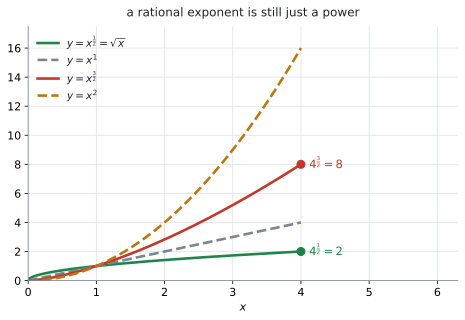
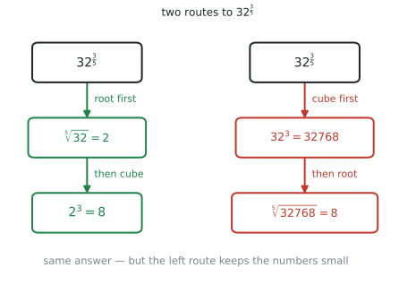

AHL 1.10 — Rational exponents（有理数の指数）
- \(a^{\frac{1}{n}}\) が \(n\) 乗すると \(a\) になる数、つまり \(\sqrt[n]{a}\) だと言える。
- \(a^{\frac{m}{n}} = \sqrt[n]{a^{m}} = \left(\sqrt[n]{a}\right)^{m}\) を、計算しやすいほうの順で使える。
- 負の指数を分数に直せる（\(x^{-\frac{1}{2}} = \dfrac{1}{\sqrt{x}}\)）。
- SL 1.5 の laws of exponents（指数法則）が、指数が分数でもそのまま使えると分かる。
- 根号の入った文字式を、指数の形に直してから整理できる。
公式集の Topic 1 を最後まで見ても、AHL 1.10 の欄はありません。 それどころか、\(a^{m} \times a^{n} = a^{m+n}\) のような laws of exponents は、AI の公式集のどこにも印刷されていません。
\(1.5\) の欄にあるのは、指数と対数のつなぎ目の \(1\) 行だけです。
\[ a^{x} = b \iff x = \log_{a} b, \quad a > 0,\ b > 0,\ a \neq 1 \]
ですから、指数法則はここだけは覚える必要があります。 SL 1.5 にも同じことが書いてあります。
この項目で新しく足されるのは、指数が分数のときの話だけです。法則そのものは何も変わりません。
Content 欄は \(1\) 行です。
Simplifying expressions, both numerically and algebraically, involving rational exponents.
Guidance 欄には、例が \(4\) つ挙がっています。
Examples: \(5^{\frac{1}{2}} \times 5^{\frac{1}{3}} = 5^{\frac{5}{6}}\), \(\quad 6^{\frac{3}{4}} \div 6^{\frac{1}{2}} = 6^{\frac{1}{4}}\), \(\quad 32^{\frac{3}{5}} = 8\), \(\quad x^{-\frac{1}{2}} = \dfrac{1}{\sqrt{x}}\)
この \(4\) つが、シラバスが示している難しさの目安です。「both numerically and algebraically」——数だけの式と、文字の入った式の両方が出る、ということです。
The idea
1. \(a^{\frac{1}{n}}\) は「\(n\) 乗すると \(a\) になる数」です
指数が整数のときは、\(a^{3} = a \times a \times a\) のように「何回かける」で意味が決まりました（SL 1.5）。\(a^{\frac{1}{2}}\) を「\(\dfrac{1}{2}\) 回かける」と読むことはできません。
そこで、指数法則がこわれないように意味を決めます。そう決めると、\(a^{\frac{1}{n}}\) は「\(n\) 乗すると \(a\) になる正の数」になります。それは \(\sqrt[n]{a}\) にほかなりません（なぜそう決めるほかにないのかは、Why it works にあります）。
\[ a^{\frac{1}{n}} = \sqrt[n]{a} \tag{1}\]
\[ 9^{\frac{1}{2}} = \sqrt{9} = 3, \qquad 8^{\frac{1}{3}} = \sqrt[3]{8} = 2, \qquad 32^{\frac{1}{5}} = \sqrt[5]{32} = 2 \]

図 1 を見てください。\(x > 1\) のところで、\(y = x^{\frac{3}{2}}\) は \(y = x^{1}\) と \(y = x^{2}\) の間にあります。\(y = x^{\frac{1}{2}}\) のほうは \(y = x^{1}\) より下です。指数の \(\dfrac{1}{2}\) が、\(0\) と \(1\) の間だからです。
指数を分数にすると、整数の指数のグラフの間が、こうして埋まります。
\(a\) が負だと、\((-4)^{\frac{1}{2}}\) のように実数にならないものが出てきます。また \(\dfrac{1}{3} = \dfrac{2}{6}\) なのに \((-8)^{\frac{1}{3}} = -2\)、\((-8)^{\frac{2}{6}} = \sqrt[6]{64} = 2\) となって、同じ指数のはずなのに答えが食い違います。
負の底でも、指数を既約分数にしたときの分母が奇数なら、実数として扱える場合はあります（\((-8)^{\frac{1}{3}} = -2\) がそれです）。しかし、いま見たように表し方によって答えが食い違い、指数法則を一貫して使えなくなります。ですからこのページでは、底 \(a\) は正の数に限ります。 試験でも、底が負の分数指数は出てきません。
2. \(a^{\frac{m}{n}}\) は、根と累乗を組み合わせたもの
\(\dfrac{m}{n} = m \times \dfrac{1}{n}\) ですから、式 1 と \((a^{m})^{n} = a^{mn}\) を合わせると
\[ a^{\frac{m}{n}} = \left(\sqrt[n]{a}\right)^{m} = \sqrt[n]{a^{m}} \tag{2}\]
です。どちらの順でやっても答えは同じです。
分母が根、分子が累乗
ここが、この項目でいちばん取り違えられるところです。
\[ a^{\frac{m}{n}} \ \longrightarrow \ \text{分母の } n \ \text{が根}, \quad \text{分子の } m \ \text{が累乗} \]
\(32^{\frac{3}{5}}\) なら、\(5\) 乗根をとって \(3\) 乗します。\(3\) 乗根をとって \(5\) 乗するのではありません。
順番で、計算の楽さが変わります

図 2 が、\(32^{\frac{3}{5}}\) の \(2\) 通りの道です。
- 根を先に … \(\sqrt[5]{32} = 2\)、それを \(3\) 乗して \(8\)
- 累乗を先に … \(32^{3} = 32768\)、その \(5\) 乗根をとって \(8\)
どちらも \(8\) になりますが、根を先にとるほうが、扱う数のけたが小さく済みます。 \(32\) や \(64\) のように、その数がちょうど \(n\) 乗数になっているときは、根を先にとってください。
\(5^{\frac{2}{3}}\) のように \(\sqrt[3]{5} = 1.7099\ldots\) が割り切れないときは、根を先にとると途中で小数を丸めることになります。そういうときは、電卓に \(5^{\frac{2}{3}}\) を見た目のまま入れます（GDC 第1節）。
3. 負の指数は、逆数にします
SL 1.5 の \(a^{-n} = \dfrac{1}{a^{n}}\) は、指数が分数でもそのままです。
\[ a^{-\frac{m}{n}} = \frac{1}{a^{\frac{m}{n}}} \tag{3}\]
シラバスの Guidance の \(4\) つ目が、まさにこれです。
\[ x^{-\frac{1}{2}} = \frac{1}{x^{\frac{1}{2}}} = \frac{1}{\sqrt{x}} \]
\(2^{-3} = \dfrac{1}{8}\) であって、\(-8\) ではありません。
負の指数が言っているのは「分母に行け」ということで、符号の話ではありません（Common errors の \(3\) つ目）。
4. 使う法則は、SL 1.5 のものと同じです
分数の指数でも、法則は \(1\) つも増えません。
| 法則 | 分数の指数での例 |
|---|---|
| \(a^{m} \times a^{n} = a^{m+n}\) | \(5^{\frac{1}{2}} \times 5^{\frac{1}{3}} = 5^{\frac{5}{6}}\) |
| \(a^{m} \div a^{n} = a^{m-n}\) | \(6^{\frac{3}{4}} \div 6^{\frac{1}{2}} = 6^{\frac{1}{4}}\) |
| \((a^{m})^{n} = a^{mn}\) | \(\left(x^{2}\right)^{\frac{3}{2}} = x^{3}\) |
| \((ab)^{n} = a^{n}b^{n}\) | \(\left(8y^{6}\right)^{\frac{2}{3}} = 4y^{4}\) |
| \(a^{-n} = \dfrac{1}{a^{n}}\) | \(x^{-\frac{1}{2}} = \dfrac{1}{\sqrt{x}}\) |
| \(a^{0} = 1\) | \(7^{0} = 1\) |
右の列の \(1\) 番目・\(2\) 番目・\(5\) 番目が、シラバスの Guidance の例そのものです。
足し算・引き算のところで、分数の通分が要ります。そこだけが SL との違いです。
\[ \frac{1}{2} + \frac{1}{3} = \frac{3}{6} + \frac{2}{6} = \frac{5}{6} \]
5. 文字式は、指数の形にそろえてから
\(\sqrt{\ }\) が混じった式は、先に全部を指数の形に直します。 そうすれば、あとは 表 1 だけで進みます。
\[ \sqrt{x} = x^{\frac{1}{2}}, \qquad \sqrt[3]{x} = x^{\frac{1}{3}}, \qquad \frac{1}{\sqrt{x}} = x^{-\frac{1}{2}} \]
たとえば
\[ \frac{x^{\frac{3}{2}}\sqrt{x}}{x^{-\frac{1}{2}}} = \frac{x^{\frac{3}{2}} \cdot x^{\frac{1}{2}}}{x^{-\frac{1}{2}}} = x^{\frac{3}{2}+\frac{1}{2}-\left(-\frac{1}{2}\right)} = x^{\frac{5}{2}} \]
分母の \(-\dfrac{1}{2}\) を引くので、\(+\dfrac{1}{2}\) になります。ここで符号を落としやすくなります。
答えの形は、問題文の指定に合わせてください。 in the form で \(ax^{p}\) が指定されていれば指数のまま、指定がなければどちらでも構いません。
6. 指数の活用方法
分数の指数は、それ自体を問われるより、他の場面で式を扱う道具として出てくるほうがずっと多いところです。使いどころは、次の \(5\) つに集まります。
- 微分の前に、形をそろえる … AHL 5.9a の power rule（累乗の微分の法則）は、\(ax^{p}\) の形にしないと使えません。\(\dfrac{3}{\sqrt[3]{x^{2}}}\) のような式は、\(3x^{-\frac{2}{3}}\) に直してから微分します（第5節）
- \(n\) 乗根で、\(1\) 期あたりの割合を出す … SL 1.4 の複利で、\(1\) 年に \(1.06\) 倍になるなら、\(1\) か月あたりは \((1.06)^{\frac{1}{12}} = 1.00487\ldots\) 倍です。\(0.06\) を \(12\) で割るのではありません
- power model（べき乗モデル）\(y = ax^{b}\) … AHL 4.13 の非線形回帰。\(b\) が \(1\) より小さいときの読み方が、例 4 と同じです
- half-life（半減期）… AHL 1.9 では \(M = 200e^{-0.03t}\) のような形で扱います。指数が負や分数になっても法則は同じ、という見方がそのまま効きます
- 面積と体積の関係 … 長さが \(k\) 倍になると面積は \(k^{2}\) 倍、体積は \(k^{3}\) 倍。逆に体積から長さを出すと \(V^{\frac{1}{3}}\) になります
分数の指数そのものが答えになる問題は多くありません。 ですが、上のどれかの途中で必ず通ります。ここで手が止まると、その先の項目でも止まります。
Why it works
ここでは、なぜ \(a^{\frac{1}{n}}\) が \(\sqrt[n]{a}\) になるのかだけを説明します。
\(a^{\frac{1}{2}}\) を「\(\dfrac{1}{2}\) 回かける」と読むことはできません。ですから、意味を決めてやる必要があります。
決め方の方針は \(1\) つです。すでにある指数法則が、こわれないようにする。
\((a^{m})^{n} = a^{mn}\) を残したいとします。\(m = \dfrac{1}{n}\) を入れると
\[ \left(a^{\frac{1}{n}}\right)^{n} = a^{\frac{1}{n} \times n} = a^{1} = a \]
でなければなりません。つまり \(a^{\frac{1}{n}}\) は、\(n\) 乗したら \(a\) に戻る数です。
\(a > 0\) のとき、\(n\) 乗して \(a\) になる正の数はただ \(1\) つしかありません。それが \(\sqrt[n]{a}\) です。
\(n\) が偶数のときは、\((-3)^{2} = 9\) のように負の数を \(n\) 乗しても \(a\) になります。 それでも \(9^{\frac{1}{2}}\) は \(3\) と決めます。\(\sqrt{\ }\) は非負の値を表すと決めておかないと、\(9^{\frac{1}{2}} \times 9^{\frac{1}{2}}\) の答えが \(9\) にも \(-9\) にもなってしまうからです。
ですから
\[ a^{\frac{1}{n}} = \sqrt[n]{a} \]
と決めるほかに、選びようがありません。
新しい約束を持ちこんだのではなく、古い法則が使えるように名前を付けただけ——それがこの項目の正体です。
Worked examples
問題文は英語です。意味が理解できなかったら、問題文の下の「日本語訳」を開いてください。解説は日本語です。
例題 1 (a) Write \(7^{\frac{2}{3}} \times 7^{\frac{5}{6}}\) in the form \(7^{p}\).
(b) Write \(10^{\frac{5}{4}} \div 10^{\frac{1}{2}}\) in the form \(10^{q}\).
(c) Find the exact value of \(81^{\frac{3}{4}}\).
日本語訳
(a) \(7^{\frac{2}{3}} \times 7^{\frac{5}{6}}\) を \(7^{p}\) の形で書きなさい。
(b) \(10^{\frac{5}{4}} \div 10^{\frac{1}{2}}\) を \(10^{q}\) の形で書きなさい。
(c) \(81^{\frac{3}{4}}\) の正確な値を求めなさい。
(a) かけ算なので、指数を足します（表 1）。通分してから足してください。
\[ \frac{2}{3} + \frac{5}{6} = \frac{4}{6} + \frac{5}{6} = \frac{9}{6} = \frac{3}{2} \]
\[ 7^{\frac{2}{3}} \times 7^{\frac{5}{6}} = 7^{\frac{3}{2}} \]
約分まで済ませてください。 \(7^{\frac{9}{6}}\) でも同じ値ですが、\(7^{\frac{3}{2}}\) が答えの形です。
(b) わり算なので、指数を引きます。
\[ \frac{5}{4} - \frac{1}{2} = \frac{5}{4} - \frac{2}{4} = \frac{3}{4} \]
\[ 10^{\frac{5}{4}} \div 10^{\frac{1}{2}} = 10^{\frac{3}{4}} \]
(c) exact value なので、小数近似ではなく正確な値で答えます。ここでは \(81 = 3^{4}\) に気づけば、答えがちょうど整数になります。
\[ 81^{\frac{3}{4}} = \left(3^{4}\right)^{\frac{3}{4}} = 3^{4 \times \frac{3}{4}} = 3^{3} = 27 \]
根を先にとる道でも同じです（第2節）。\(\sqrt[4]{81} = 3\)、それを \(3\) 乗して \(27\) です。
検算。 電卓に \(81^{\frac{3}{4}}\) と入れると \(27\) と返ります ✓
(a) \[\frac{2}{3}+\frac{5}{6} = \frac{9}{6} = \frac{3}{2} \ \Rightarrow \ 7^{\frac{2}{3}} \times 7^{\frac{5}{6}} = 7^{\frac{3}{2}}\]
(b) \[\frac{5}{4}-\frac{1}{2} = \frac{3}{4} \ \Rightarrow \ 10^{\frac{5}{4}} \div 10^{\frac{1}{2}} = 10^{\frac{3}{4}}\]
(c) \[81^{\frac{3}{4}} = \left(3^{4}\right)^{\frac{3}{4}} = 3^{3} = 27\]
例題 2 Simplify the following, giving each answer as a single power of the variable where possible.
(a) \(\dfrac{x^{\frac{3}{2}}\sqrt{x}}{x^{-\frac{1}{2}}}\), where \(x > 0\)
(b) \(\left(8y^{6}\right)^{\frac{2}{3}}\)
日本語訳
次の式を簡単にしなさい。できるものは、文字の \(1\) つの累乗の形で書きなさい。
(a) \(\dfrac{x^{\frac{3}{2}}\sqrt{x}}{x^{-\frac{1}{2}}}\)（ただし \(x > 0\)）
(b) \(\left(8y^{6}\right)^{\frac{2}{3}}\)
(a) まず \(\sqrt{x}\) を指数の形に直します（第5節）。
\[ \frac{x^{\frac{3}{2}} \cdot x^{\frac{1}{2}}}{x^{-\frac{1}{2}}} \]
分子はかけ算なので足し、分母は引きます。
\[ \frac{3}{2} + \frac{1}{2} - \left(-\frac{1}{2}\right) = \frac{3}{2}+\frac{1}{2}+\frac{1}{2} = \frac{5}{2} \]
\[ \frac{x^{\frac{3}{2}}\sqrt{x}}{x^{-\frac{1}{2}}} = x^{\frac{5}{2}} \]
負の指数を引くと、足すことになります。 ここが落としどころです。
(b) \((ab)^{n} = a^{n}b^{n}\) なので、\(8\) にも \(y^{6}\) にも \(\dfrac{2}{3}\) 乗がかかります。
\[ \left(8y^{6}\right)^{\frac{2}{3}} = 8^{\frac{2}{3}} \times \left(y^{6}\right)^{\frac{2}{3}} \]
\(8 = 2^{3}\) なので \(8^{\frac{2}{3}} = \left(2^{3}\right)^{\frac{2}{3}} = 2^{2} = 4\)、\(\left(y^{6}\right)^{\frac{2}{3}} = y^{4}\) です。
\[ \left(8y^{6}\right)^{\frac{2}{3}} = 4y^{4} \]
\(8\) を残して \(8y^{4}\) としないでください。 係数にも指数はかかります（Common errors の \(5\) つ目）。
(a) \[\frac{x^{\frac{3}{2}} \cdot x^{\frac{1}{2}}}{x^{-\frac{1}{2}}} = x^{\frac{3}{2}+\frac{1}{2}+\frac{1}{2}} = x^{\frac{5}{2}}\]
(b) \[\left(8y^{6}\right)^{\frac{2}{3}} = 8^{\frac{2}{3}}y^{4} = \left(2^{3}\right)^{\frac{2}{3}}y^{4} = 4y^{4}\]
例題 3 Write \(\dfrac{3}{\sqrt[3]{x^{2}}}\) in the form \(ax^{p}\), where \(a\) and \(p\) are constants.
日本語訳
\(\dfrac{3}{\sqrt[3]{x^{2}}}\) を \(ax^{p}\) の形で書きなさい。\(a\) と \(p\) は定数です。
手順は \(2\) つです。根号を指数に直す、分母を負の指数で上げる。
\[ \sqrt[3]{x^{2}} = x^{\frac{2}{3}} \]
式 3 より \(\dfrac{1}{x^{\frac{2}{3}}} = x^{-\frac{2}{3}}\) ですから
\[ \frac{3}{\sqrt[3]{x^{2}}} = 3x^{-\frac{2}{3}} \]
\(a = 3\)、\(p = -\dfrac{2}{3}\) です。
\(ax^{p}\) の形にしておくと、AHL 5.9a の power rule（累乗の微分の法則）がそのまま使えます。根号のままでは微分できません。
「\(ax^{p}\) の形にせよ」と言われたら、次に微分か積分が来ると思って構いません。
\[\frac{3}{\sqrt[3]{x^{2}}} = \frac{3}{x^{\frac{2}{3}}} = 3x^{-\frac{2}{3}}\]
例題 4 The mass \(M\) kg of a certain animal and its daily energy use \(E\) kilojoules are modelled by
\[ E = 290\,M^{\frac{3}{4}} \]
(a) Find \(E\) when \(M = 16\).
(b) A second animal has \(16\) times the mass of the first. Find the factor by which its daily energy use is greater, and comment on your answer.
日本語訳
ある動物の質量 \(M\) kg と、\(1\) 日のエネルギー消費 \(E\) キロジュールが、上の式でモデル化されています。
(a) \(M = 16\) のときの \(E\) を求めなさい。
(b) \(2\) 頭目の動物は、\(1\) 頭目の \(16\) 倍の質量です。\(1\) 日のエネルギー消費が何倍になるかを求め、その答えについてコメントしなさい。
(a) \(16 = 2^{4}\) なので、\(16^{\frac{3}{4}}\) は正確に出せます。
\[ 16^{\frac{3}{4}} = \left(2^{4}\right)^{\frac{3}{4}} = 2^{3} = 8 \]
\[ E = 290 \times 8 = 2320 \]
単位を付けてください。 \(2320\) キロジュールです。
(b) \(M\) が \(16\) 倍になると、\(M^{\frac{3}{4}}\) は \(16^{\frac{3}{4}}\) 倍になります。
\[ \frac{290\,(16M)^{\frac{3}{4}}}{290\,M^{\frac{3}{4}}} = 16^{\frac{3}{4}} = 8 \]
\(E\) は \(8\) 倍です。
comment on は、数値の意味を文脈の言葉で言う設問です。\(16\) 倍にならないところが要点です。
試験ではこう書く
The daily energy use is \(8\) times greater, not \(16\) times. Because the exponent \(\frac{3}{4}\) is less than \(1\), energy use grows more slowly than mass, so the larger animal uses less energy per kilogram of body mass than the smaller one.
（\(1\) 日のエネルギー消費は \(8\) 倍であって、\(16\) 倍ではない。指数 \(\dfrac{3}{4}\) が \(1\) より小さいので、エネルギー消費は質量ほど速くは増えず、大きい動物のほうが体重 \(1\) kg あたりの消費が少ない、という意味です。）
(a) \[16^{\frac{3}{4}} = \left(2^{4}\right)^{\frac{3}{4}} = 2^{3} = 8\] \[E = 290 \times 8 = 2320 \text{ kJ}\]
(b) \[\frac{(16M)^{\frac{3}{4}}}{M^{\frac{3}{4}}} = 16^{\frac{3}{4}} = 8\] The energy use is \(8\) times greater, not \(16\) times. Since \(\frac{3}{4} < 1\), energy use grows more slowly than mass.
Common errors
\(32^{\frac{3}{5}}\) を \(\sqrt[3]{32^{5}}\) と読んでしまう誤りです。
分母が根、分子が累乗です（第2節）。正しくは \(\sqrt[5]{32^{3}} = \left(\sqrt[5]{32}\right)^{3} = 2^{3} = 8\) です。
誤った読み方だと \(\sqrt[3]{32^{5}} = 322.5\ldots\) になり、まったく違う数になります。
\(5^{\frac{1}{2}} \times 5^{\frac{1}{3}}\) を \(5^{\frac{1}{6}}\) としてしまう誤りです。
かけ算では指数を足します。 \(\dfrac{1}{2}+\dfrac{1}{3} = \dfrac{5}{6}\) です。
指数をかけるのは \((a^{m})^{n}\) のときだけです（表 1）。式の形をよく見てから、足すのかかけるのかを決めてください。
\(2^{-3}\) を \(-8\) としてしまう誤りです。
\[ 2^{-3} = \frac{1}{2^{3}} = \frac{1}{8} \]
負の指数は「分母に行け」という指示で、符号の話ではありません（第3節）。底が正なら、答えはいつも正です。
\(\sqrt{a+b}\) を \(\sqrt{a}+\sqrt{b}\) としてしまう誤りです。
\((ab)^{n} = a^{n}b^{n}\) は成り立ちますが、\((a+b)^{n} = a^{n}+b^{n}\) は成り立ちません。
\(\sqrt{9+16} = \sqrt{25} = 5\) ですが、\(\sqrt{9}+\sqrt{16} = 3+4 = 7\) です。別の数になります。
\(\left(8y^{6}\right)^{\frac{2}{3}}\) を \(8y^{4}\) としてしまう誤りです。
かっこの外の指数は、中身の全部にかかります。\(8\) にもかかるので
\[ 8^{\frac{2}{3}} = \left(2^{3}\right)^{\frac{2}{3}} = 4 \]
で、答えは \(4y^{4}\) です（例 2）。
Using your GDC (TI-Nspire CX II)
1. 分数の指数は、見た目のまま入れます
TI-Nspire CX II には分数のテンプレートがあります（\(9\) キーの右にあるテンプレートのパレット）。\(81\) を打ち、^ で指数の位置に移り、そこでテンプレートを出して \(3\) と \(4\) を入れてください。
\[ 81^{\frac{3}{4}} \]
画面にもこの形で出て、\(27\) と返ります。この入れ方なら、かっこは要りません。
テンプレートを使わずに打つときは、指数全体をかっこで囲んでください。
| 入力 | 電卓が読むもの |
|---|---|
81^(3/4) |
\(81^{\frac{3}{4}} = 27\) |
81^3/4 |
\(\dfrac{81^{3}}{4}\)（enter なら \(\dfrac{531441}{4}\)、ctrl + enter なら \(132860.25\)） |
答えが \(27\) 前後にならなかったら、まずここを疑ってください。 指数が \(2\) 文字以上あるときは、テンプレートを使うほうが確実です。
2. 正確な形と小数を切り替える
enter で入力すると、分数は分数のまま返ります。ctrl + enter で入力すると小数になります。
ただし、根号は残りません。 TI-Nspire CX II は Numeric なので、\(12^{\frac{1}{2}}\) は enter でも \(3.4641\ldots\) と小数で返ります（機種ごとの違いは SL 3.1 の表にあります）。
ですから exact value と問われて \(2\sqrt{3}\) のような形が要るときは、自分で書くことになります。電卓が答えの形をそのまま出してくれるのは、\(81^{\frac{3}{4}} = 27\) のように整数や分数になるときだけです。
3. 根号のテンプレート
\(\sqrt{\ }\) は ctrl + x² で入ります。\(n\) 乗根は、\(9\) キーの右にあるテンプレートのパレットから \(\sqrt[n]{\ }\) を選びます（SL 1.3 と同じ場所です）。
指数の形で打つほうが速いことが多いので、\(\sqrt[5]{32}\) は \(32^{\frac{1}{5}}\) と入れても構いません。
4. 文字式は、電卓では簡単になりません
\(\left(8y^{6}\right)^{\frac{2}{3}}\) と打っても、\(4y^{4}\) にはなりません。\(y\) に値が入っていないので、そこで止まってエラーの表示が出ます。
文字式の整理は、手でやることです（第5節）。
電卓が使えるのは、数だけの式と、答えの確かめです。
5. 検算のしかた
手で出した答えを確かめる方法が \(2\) つあります。
- 数の式 … 元の式と、簡単にした式を、それぞれ小数で出して見くらべる
- 文字式 … \(x\) に適当な数（たとえば \(x = 4\)）を入れて、両方が同じ値になるか見る
\(2\) つ目が便利です。例 2 (a) なら、\(x = 4\) で
\[ \frac{4^{\frac{3}{2}}\sqrt{4}}{4^{-\frac{1}{2}}} = \frac{8 \times 2}{0.5} = 32, \qquad 4^{\frac{5}{2}} = 32 \]
一致しました。 文字が \(1\) つなら、この確かめがいちばん速く済みます。
Exercises
各問題に、折りたたみが3つ付いています。日本語訳、解答例（答案用紙に書くべきこと。英語です）、解説（なぜそうなるか。日本語です）。
まず自分で解いて、次に解答例と見くらべてください。解説は、合わなかったときだけ開けば十分です。
1 Write \(3^{\frac{1}{4}} \times 3^{\frac{7}{12}}\) in the form \(3^{p}\).
日本語訳
\(3^{\frac{1}{4}} \times 3^{\frac{7}{12}}\) を \(3^{p}\) の形で書きなさい。
\[\frac{1}{4}+\frac{7}{12} = \frac{3}{12}+\frac{7}{12} = \frac{10}{12} = \frac{5}{6}\]
\[3^{\frac{1}{4}} \times 3^{\frac{7}{12}} = 3^{\frac{5}{6}}\]
かけ算なので、指数を足します（表 1）。
分母を \(12\) にそろえてから足してください。\(\dfrac{1}{4} = \dfrac{3}{12}\) です。
\(\dfrac{10}{12}\) は約分して \(\dfrac{5}{6}\) にします。約分を忘れても値は同じですが、答えの形としては \(3^{\frac{5}{6}}\) です。
2 Write \(12^{\frac{5}{6}} \div 12^{\frac{1}{3}}\) in the form \(12^{q}\).
日本語訳
\(12^{\frac{5}{6}} \div 12^{\frac{1}{3}}\) を \(12^{q}\) の形で書きなさい。
\[\frac{5}{6}-\frac{1}{3} = \frac{5}{6}-\frac{2}{6} = \frac{3}{6} = \frac{1}{2}\]
\[12^{\frac{5}{6}} \div 12^{\frac{1}{3}} = 12^{\frac{1}{2}}\]
わり算なので、指数を引きます。
\(12^{\frac{1}{2}} = \sqrt{12} = 2\sqrt{3}\) とも書けますが、in the form で \(12^{q}\) が指定されているので \(12^{\frac{1}{2}}\) が答えです。
問題文が求めている形で止めてください。 よけいに書き進めても点は増えません。
3 Find the exact value of \(64^{\frac{2}{3}}\).
日本語訳
\(64^{\frac{2}{3}}\) の正確な値を求めなさい。
\[64^{\frac{2}{3}} = \left(\sqrt[3]{64}\right)^{2} = 4^{2} = 16\]
根を先にとります（第2節）。\(\sqrt[3]{64} = 4\) で、それを \(2\) 乗して \(16\) です。
累乗を先にすると \(64^{2} = 4096\) となり、その \(3\) 乗根を手で出すのは大変です。答えは同じ \(16\) ですが、道のりが長くなります。
\(64 = 2^{6}\) と見て \(\left(2^{6}\right)^{\frac{2}{3}} = 2^{4} = 16\) としても構いません。
4 Find the exact value of \(\left(\dfrac{25}{4}\right)^{-\frac{1}{2}}\).
日本語訳
\(\left(\dfrac{25}{4}\right)^{-\frac{1}{2}}\) の正確な値を求めなさい。
\[\left(\frac{25}{4}\right)^{-\frac{1}{2}} = \left(\frac{4}{25}\right)^{\frac{1}{2}} = \frac{\sqrt{4}}{\sqrt{25}} = \frac{2}{5}\]
負の指数は逆数にします（第3節）。分数の逆数は、上下をひっくり返すことです。
\(\left(\dfrac{a}{b}\right)^{n} = \dfrac{a^{n}}{b^{n}}\) なので、\(\sqrt{\ }\) は分子と分母のそれぞれにかかります。
答えは正の数です。 指数が負でも、底が正なら答えは負になりません。
5 Write \(\dfrac{5}{\sqrt{x}}\) in the form \(ax^{p}\), where \(x > 0\).
日本語訳
\(\dfrac{5}{\sqrt{x}}\) を \(ax^{p}\) の形で書きなさい。ただし \(x > 0\) とします。
\[\frac{5}{\sqrt{x}} = \frac{5}{x^{\frac{1}{2}}} = 5x^{-\frac{1}{2}}\]
\(\sqrt{x} = x^{\frac{1}{2}}\) に直してから、分母を負の指数で上げます（第5節）。
シラバスの Guidance の \(4\) つ目そのものです。
\(5\) には指数が付きません。 分母にあるのは \(\sqrt{x}\) だけなので、\(5\) はそのまま前に残ります。
6 Simplify \(\left(16x^{8}\right)^{\frac{3}{4}}\).
日本語訳
\(\left(16x^{8}\right)^{\frac{3}{4}}\) を簡単にしなさい。
\[\left(16x^{8}\right)^{\frac{3}{4}} = 16^{\frac{3}{4}} \times x^{8 \times \frac{3}{4}} = \left(2^{4}\right)^{\frac{3}{4}}x^{6} = 2^{3}x^{6} = 8x^{6}\]
かっこの外の指数は、\(16\) にも \(x^{8}\) にもかかります（Common errors の \(5\) つ目）。
\(16 = 2^{4}\) と見ると、\(16^{\frac{3}{4}} = 2^{3} = 8\) です。
\(x\) のほうは指数どうしをかけて、\(8 \times \dfrac{3}{4} = 6\) です。
検算。 \(x = 1\) を入れると、元の式は \(16^{\frac{3}{4}} = 8\)、答えは \(8 \times 1 = 8\) ✓ 係数だけを確かめられます。
7 Simplify \(\dfrac{\left(x^{2}\right)^{\frac{3}{2}}}{x^{\frac{1}{2}}\sqrt{x}}\), where \(x > 0\).
日本語訳
\(\dfrac{\left(x^{2}\right)^{\frac{3}{2}}}{x^{\frac{1}{2}}\sqrt{x}}\) を簡単にしなさい。ただし \(x > 0\) とします。
\[\left(x^{2}\right)^{\frac{3}{2}} = x^{3}, \qquad x^{\frac{1}{2}}\sqrt{x} = x^{\frac{1}{2}} \cdot x^{\frac{1}{2}} = x\]
\[\frac{x^{3}}{x} = x^{2}\]
分子と分母を別々に片づけてから、最後に引き算をします。
- 分子は \((a^{m})^{n} = a^{mn}\) なので \(2 \times \dfrac{3}{2} = 3\)
- 分母は \(\sqrt{x} = x^{\frac{1}{2}}\) に直して、\(\dfrac{1}{2}+\dfrac{1}{2} = 1\)
\(3 - 1 = 2\) で、答えは \(x^{2}\) です。
検算。 \(x = 4\) を入れると、分子は \(4^{3} = 64\)、分母は \(2 \times 2 = 4\)、\(\dfrac{64}{4} = 16 = 4^{2}\) ✓
8 Solve the equation \(x^{\frac{3}{2}} = 27\), where \(x > 0\).
日本語訳
方程式 \(x^{\frac{3}{2}} = 27\) を解きなさい。ただし \(x > 0\) とします。
Raise both sides to the power \(\dfrac{2}{3}\):
\[\left(x^{\frac{3}{2}}\right)^{\frac{2}{3}} = 27^{\frac{2}{3}}\]
\[x = \left(\sqrt[3]{27}\right)^{2} = 3^{2} = 9\]
\(\dfrac{3}{2}\) を消すには、その逆数の \(\dfrac{2}{3}\) 乗をとります。\(\dfrac{3}{2} \times \dfrac{2}{3} = 1\) になるからです。
両辺に同じことをしてください。右辺も \(\dfrac{2}{3}\) 乗します。
\(27^{\frac{2}{3}}\) は、根を先にとって \(\sqrt[3]{27} = 3\)、それを \(2\) 乗して \(9\) です。
検算。 \(9^{\frac{3}{2}} = \left(\sqrt{9}\right)^{3} = 3^{3} = 27\) ✓ 元の式に戻りました。
9 The surface area \(S\) cm\(^{2}\) of a certain fruit is modelled in terms of its volume \(V\) cm\(^{3}\) by \(S = 4.8\,V^{\frac{2}{3}}\).
(a) Find \(S\) when \(V = 125\).
(b) A second fruit has \(8\) times the volume of the first. Find the factor by which its surface area is greater, and interpret your answer in context.
日本語訳
ある果物の表面積 \(S\) cm\(^{2}\) が、体積 \(V\) cm\(^{3}\) を使って \(S = 4.8\,V^{\frac{2}{3}}\) とモデル化されています。
(a) \(V = 125\) のときの \(S\) を求めなさい。
(b) \(2\) つ目の果物は、\(1\) つ目の \(8\) 倍の体積です。表面積が何倍になるかを求め、その答えを文脈の中で解釈しなさい。
(a) \[125^{\frac{2}{3}} = \left(\sqrt[3]{125}\right)^{2} = 5^{2} = 25\] \[S = 4.8 \times 25 = 120 \text{ cm}^{2}\]
(b) \[\frac{4.8\,(8V)^{\frac{2}{3}}}{4.8\,V^{\frac{2}{3}}} = 8^{\frac{2}{3}} = 4\] The surface area is \(4\) times greater, not \(8\) times. Since \(\frac{2}{3} < 1\), the surface area grows more slowly than the volume, so the larger fruit has less surface area for each cm\(^{3}\) of flesh.
(a) \(125 = 5^{3}\) なので、根を先にとると正確な値が出ます（第2節）。
(b) 倍率だけを聞かれているので、\(V\) を消せます。\(8^{\frac{2}{3}} = \left(\sqrt[3]{8}\right)^{2} = 2^{2} = 4\) です。
interpret が付いているので、\(4\) という数だけでは点になりません。現実に何を意味するかを書いてください。
指数が \(1\) より小さいと、大きくなるほど「割に合わなくなる」——これがこの型のモデルの読みどころです。
試験ではこう書く
The surface area is \(4\) times greater, not \(8\) times. Because the exponent \(\frac{2}{3}\) is less than \(1\), the surface area grows more slowly than the volume, so the bigger fruit has less skin per cm\(^{3}\) of flesh than the smaller one.
10 A student is asked to find the exact value of \(32^{\frac{3}{5}}\) and writes
\[ 32^{\frac{3}{5}} = \sqrt[3]{32^{5}} = 322.5\ldots \]
Identify the error and find the correct value.
日本語訳
ある生徒が \(32^{\frac{3}{5}}\) の正確な値を求めるように言われて、上のように書きました。誤りを指摘し、正しい値を求めなさい。
The student has swapped the numerator and the denominator. In \(a^{\frac{m}{n}}\) the denominator \(n\) gives the root and the numerator \(m\) gives the power, so the root here is the fifth root, not the cube root.
\[32^{\frac{3}{5}} = \left(\sqrt[5]{32}\right)^{3} = 2^{3} = 8\]
Identify the error なので、どこが違うかを言葉で書く必要があります。値だけを直しても、指摘の点は取れません。
\(a^{\frac{m}{n}}\) では、分母が根、分子が累乗です（第2節）。
生徒の書いた \(\sqrt[3]{32^{5}}\) は \(322.5\ldots\) という中途半端な数になります。exact value と問われているのに小数が出てきた時点で、どこかがおかしいと気づけます。
正しくは \(\sqrt[5]{32} = 2\) を先にとって、\(2^{3} = 8\) です。
検算。 電卓に \(32^{\frac{3}{5}}\) と入れると \(8\) と返ります ✓
試験ではこう書く
The error is that the numerator and denominator of the exponent have been swapped. In \(a^{\frac{m}{n}}\), the denominator \(n\) tells you which root to take and the numerator \(m\) tells you which power to raise it to. Here \(n = 5\), so the fifth root is needed: \(32^{\frac{3}{5}} = \left(\sqrt[5]{32}\right)^{3} = 2^{3} = 8\).